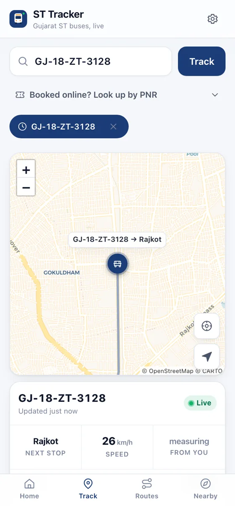
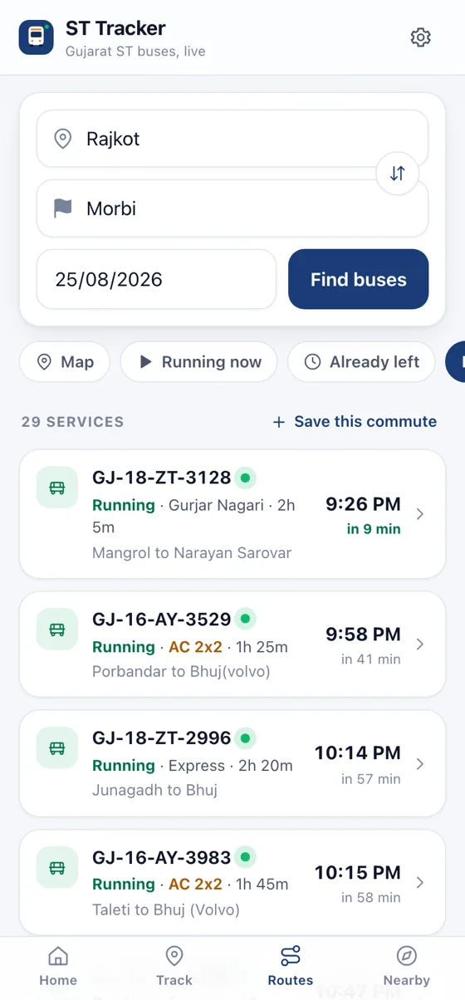
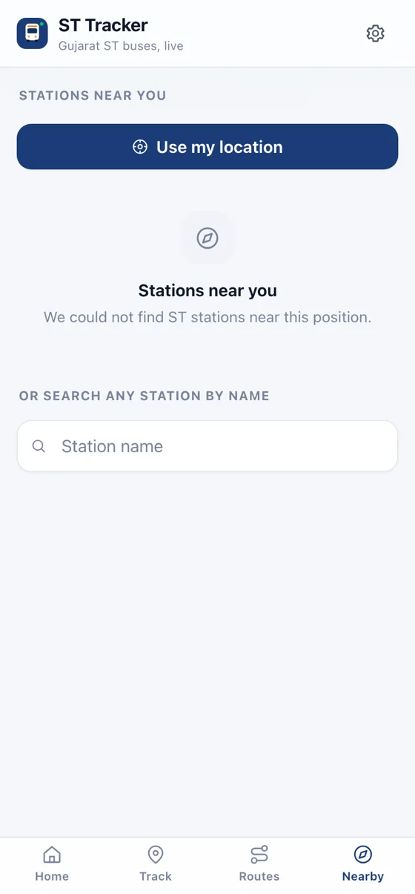

Live location by number plate
Enter the plate written on the bus. You get its position on the map, the stop it just passed, the one it is heading to, its speed, and how far it is from you.
Free · No ads · No account
Type a number plate and watch the bus move. See which stop it has just left, how fast it is going, and when it will reach you — built for the people who actually wait at the stop.
Opens the live map for that bus. Try the example if you don't have a plate handy.
Not a timetable board. A live picture of where your bus is right now.
Enter the plate written on the bus. You get its position on the map, the stop it just passed, the one it is heading to, its speed, and how far it is from you.
See every stop on the line with the time the bus actually reached each one, which stops are behind it, and which are still ahead.
Search Ahmedabad to Rajkot, Rajkot to Morbi, or any pair of the 19,026 stations. Filter by service type, sort by departure or journey time, and see buses that have already left in case you are boarding further along.
Pick the stop you are waiting at. Your phone tells you when the bus is close, so you can stay inside until it is worth walking out.
Riders report whether there are seats, whether people are standing, and whether a bus never came or was replaced. You see it on the departure list before you choose which one to wait for.
Install it to your home screen and it opens full screen, starts instantly, and still shows the last position it knew when you go through a dead patch.
Three screens do most of the work. Everything below is the real interface, in the theme you are reading this in.



Live departures and timetables, one tap away.
No. ST Tracker is an independent tool built for Gujarat ST commuters. It shows the same live bus positions the operator publishes, in a form that is quicker to read at a bus stop. It is not affiliated with GSRTC.
Positions come from the GPS unit on the bus itself, refreshed every few seconds while the bus is on a trip. Arrival estimates are worked out from that position against the timetable, and the app stays silent rather than showing a number it cannot support.
The operator only reports a position while a bus is actually running a trip. A bus parked at the depot, or one that finished its run, will not appear until it sets off again.
Yes. Open it in Safari, tap Share, then Add to Home Screen. It then runs full screen like an installed app. Arrival notifications on iPhone need it installed to the home screen first.
Yes, and there are no adverts, no subscription and no account. It is run as a public utility for Gujarat commuters.
Yes. The whole app and this page are available in Gujarati, including station and route names where the operator provides them.
It takes one tap and costs nothing.
Open ST Tracker